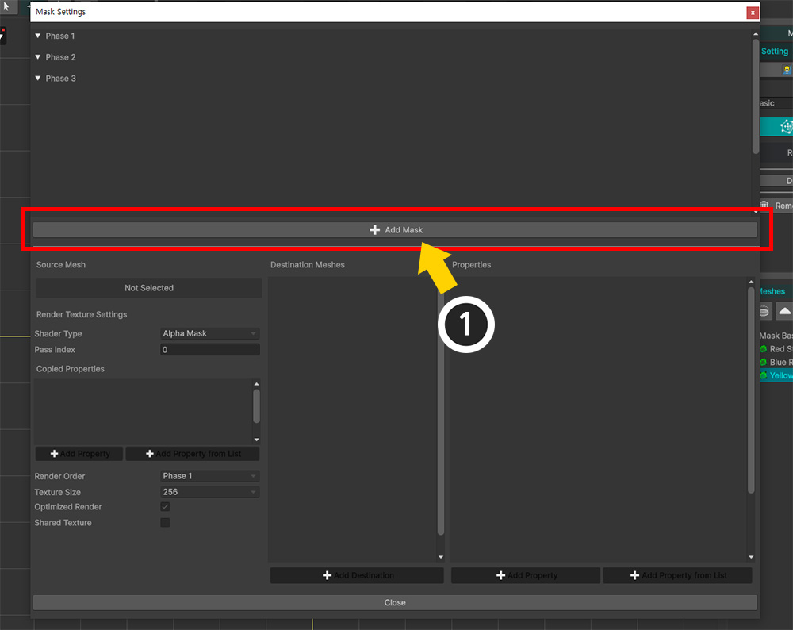
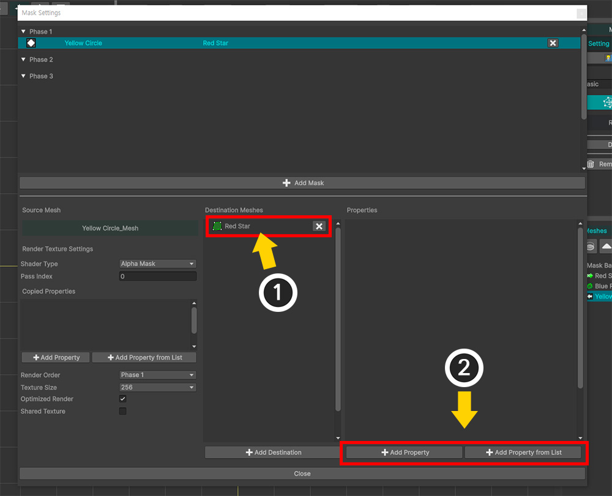
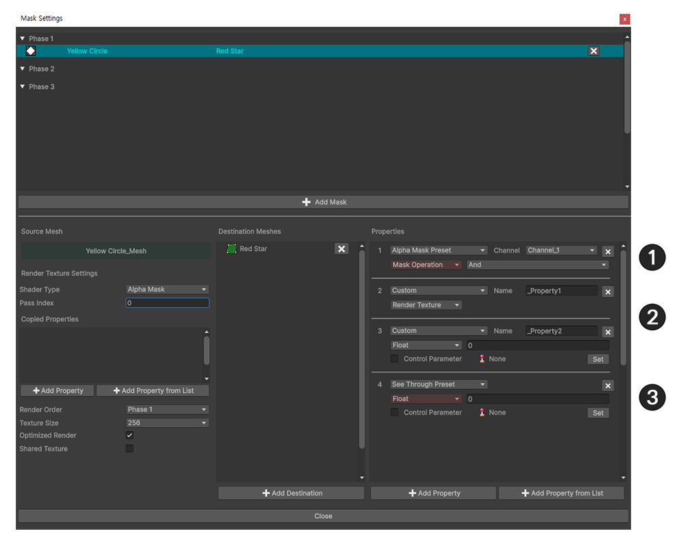
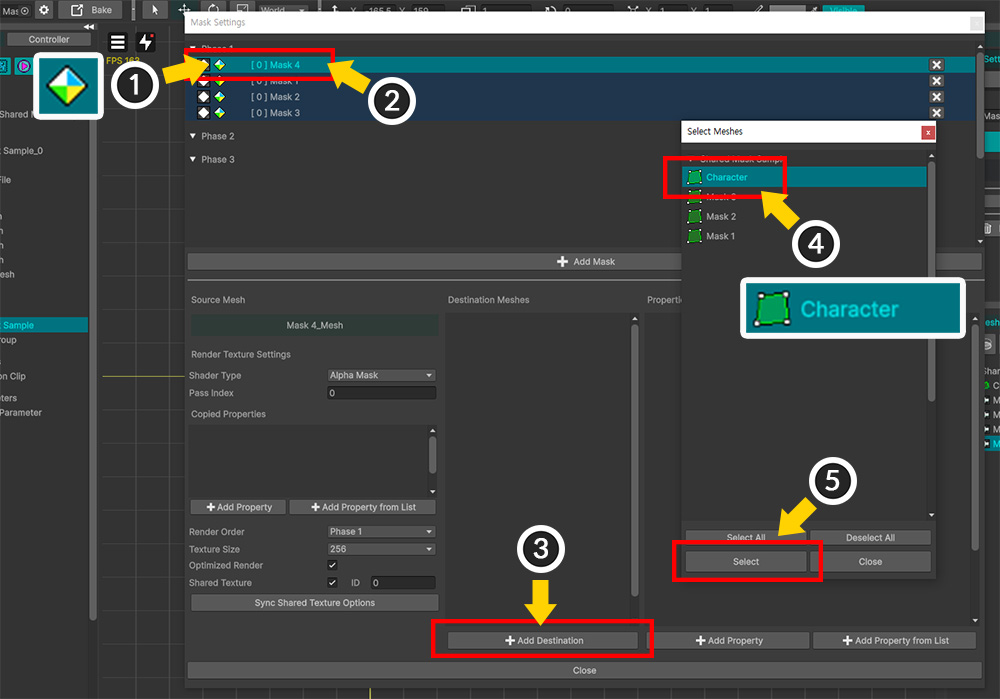
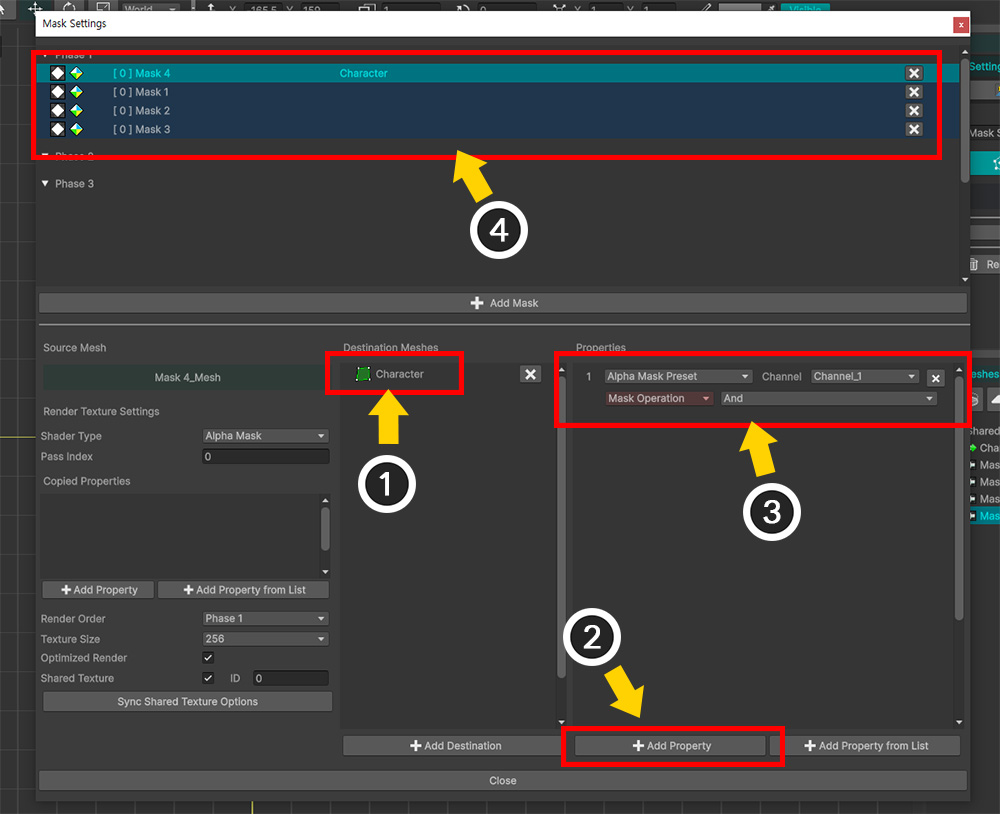
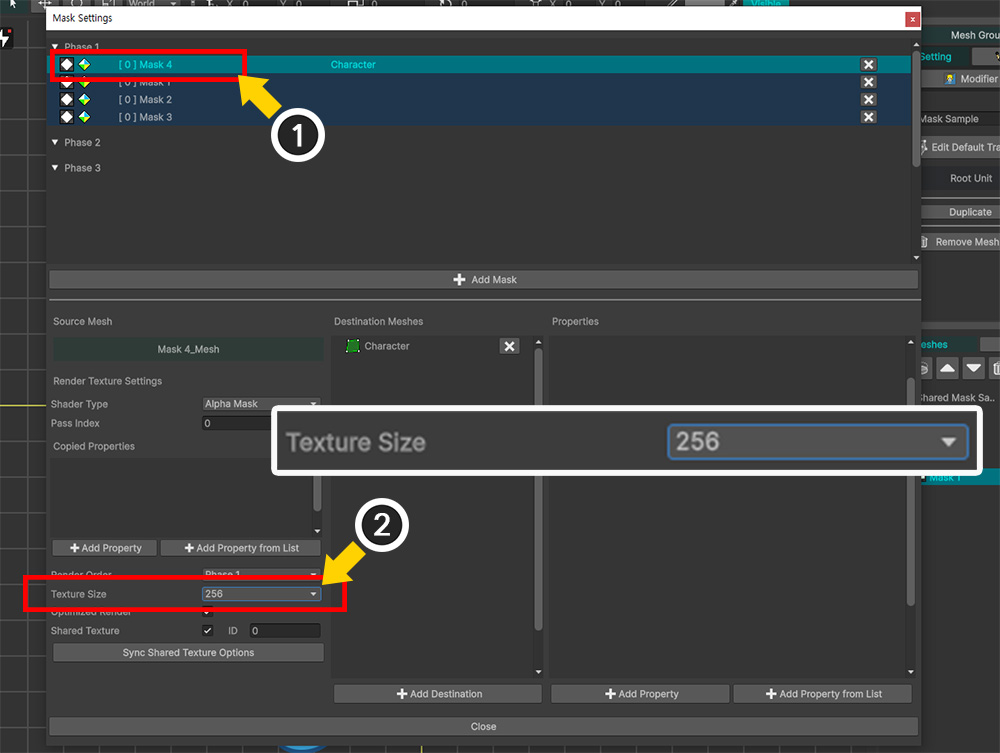
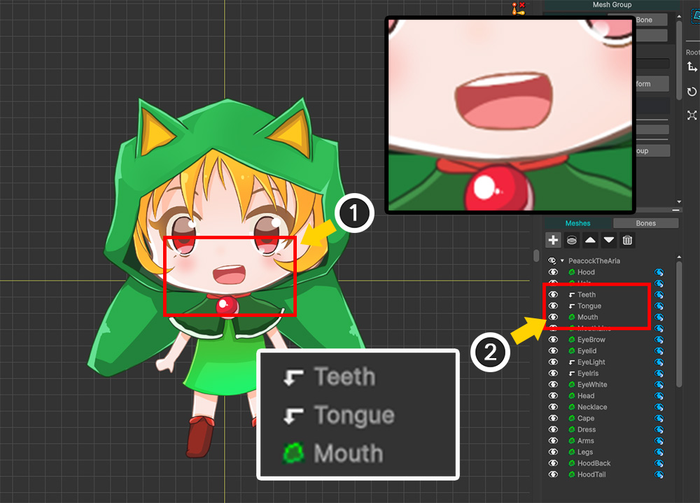

AnyPortrait > Manual > Mask
Mask
1.6.0
AnyPortrait v1.6.0 has greatly improved the existing Clipping Mask function.
The greatly enhanced Mask function can create a mask regardless of the rendering order of the mesh and transfer it to another mesh.
In addition, users can freely set the method of creating the mask and the properties transferred.
By utilizing this, users will be able to create various expressions without having to write separate shaders or scripts.
This page covers the basic operation and basic usage of the Mask feature.
It also covers the newly added Shared Texture.
Please check out the following manual for various functions and various usage methods that are not covered on this page.
- Mask and Custom Shader
- Combining Masks
- Mask Chain
- Mask Only Mesh
- See-Through Effect
How the mask works

AnyPortrait uses Render Texture to implement masks.
The process of creating a mask and using it for rendering is roughly expressed as in the image above.
The mesh that acts as the mask creates an Alpha Mask Render Texture, and the created Alpha Mask Render Texture is passed to the target mesh.
When the target mesh is rendered, a part of the image is clipped using the Alpha Mask Render Texture.

Based on the concept of mask operation discussed above, let's take a closer look at how AnyPortrait implements it.
The vertical direction means the general rendering process to the camera, and the horizontal direction means the process of transferring mask data.
When the mask mesh is rendered through the shader, Render Texture rendering using Alpha Mask Shader is also performed.
When rendering using Alpha Mask Shader, the property values used in the basic rendering are utilized.
Alpha Mask Shader operates through Command Buffer, and the Alpha Mask Render Texture generated through this process is transferred to the target mesh.
The target mesh receives Mask Data including Render Texture and is rendered to the screen through a shader with a clipping function.
In summary, we can summarize that the following two steps must be performed to render a mask.
(1) Render texture is rendered using Alpha Mask Shader.
(2) Mask Data including Render Texture is passed to the target mesh for rendering.
If you understand this method, you can easily understand what each option of the Mask function does.
Let's apply Mask.
How to use a mask

Here is a simple example I prepared to test the mask.
Let's use "Yellow Circle" as a mask and apply it to "Red Star".
There is a Blue Square mesh between the two meshes.
This is to show that masking is possible in this case, unlike the existing clipping mask.
(1) Select the mesh group and select the Setting tab.
(2) Select the mesh that will act as the mask. (You can select any mesh.)
(3) When you select the mesh, buttons related to the mask will appear. Among the buttons, click the Open Mask Settings button.
Buttons related to the mask function perform the following functions:
- Open Mask Settings: Open the Mask Setting Dialog.
- As Mask Only: Set the selected mesh as a Mask Only Mesh. (Related Page)
- Clip to Below Mesh: Set the selected mesh to be clipped by the mesh located in the layer below.

AnyPortrait v1.6.0 opens the new Mask Setting Dialog.
You can edit all mask settings of the currently edited mesh group in this dialog.
1. Mask Data List: Mask data of the meshes. Mask Data are grouped by Phase according to the render order and shown.
2. Mask Options: Options for creating masks.
3. Target Mesh List: Target meshes to which the selected mask data will be transferred.
4. Transferred Property List: Mask data is transferred to the target mesh in the form of a combination of properties including the render texture. Set the properties transferred in this item.
You can check out more detailed explanations for each item below.
First, let's learn about the basic process of creating a mask.

(1) Click the Add Mask button to create new mask data.

(2) Since the mask data is created based on the "mesh that creates the mask", select the mesh that creates the mask (here, Yellow Circle).
(3) Press the Select button.
Note
In this window, you can select two or more meshes and add them at the same time.
If you add multiple meshes, the number of mask data will be generated.
This is because mask data is generated per mesh.
It is possible to have more than two mask data per mesh.

(1) Mask data for the "Yellow Circle" mesh has been created and added to the list. Click on this data to select it.
(2) This mask data will perform clipping by the Alpha channel, so set the value of Shader Type to Alpha Mask.
(3) You need to specify the mesh that will receive this mask data, so click the Add Destination button.
(4) Select the "Red Star" mesh.
(5) Click the Select button.

(1) You can see that "Red Star" is registered as the target to receive the mask.
(2) Now, we need to set the type of property in which the mask data will be transmitted.
Let's configure the property information by pressing the Add Property button.
If you want to select and set a specific property of the shader, you can also press the Add Property from List button.

(3) New property information has been added.
The default value of the property information is "Alpha Mask Preset" type.
This is a preset configuration of properties for general clipping rendering using Alpha Mask.
In this example, we wanted to test Alpha Mask, so we will use the default value.

Let's close the Mask Setting Dialog and check the rendering result.
(1) You can see that the Red Star mesh is clipped by using the Yellow Circle mesh as a mask.
(2) If you look at the Hierarchy UI on the right, you can see that the icon changes depending on whether the mask is transmitted or received.

You can do Bake and see the clipping rendering results in your Unity scene.
Mask Setting Dialog
Each item in the Mask Setting Dialog is as follows:

1. Mask Data: Mask data is output in list format. Each item consists of Icons according to shader, shared texture, and chain, Name of the mesh that creates the mask, Names of the meshes that receive the mask, and Remove button.
2. Remove Button: You can remove the mask data by pressing this button.
3. Selected Mesh Name: The name of the mesh to which the selected mask data belongs.
4. Shader Information: Set the type of shader that renders the render texture for the mask and the pass that is executed.
5. Copied Property Information for Render Texture Generation: The shader that generates the render texture copies and utilizes some of the basic shader properties of the mask generation mesh. Users can add the copied properties.
6. Render Order: You can specify the order of rendering the render texture in Phase units. (Related Page)
7. Render Texture Options: Options for generation in the render texture. You can set Texture Size, Whether Optimized Rendering, and Whether Shared Texture.
8. Target Meshes: You can view the meshes that will receive the mask data in a list format. You can exclude each item by clicking the Remove button.
9. Transmitted property information: This is the item that sets which property the mask data is transmitted as to the target mesh. You can set it to be transmitted using a pre-configured preset or a user-defined property.
10. Property preset type: When transmitting mask data, it is often transmitted through two or more properties, and you can conveniently set it by configuring it as a preset.
11. Property name or channel: Set the property name of the shader. Depending on the preset, you can set the channel instead of the name.
12. Property value type: Set the type of the value of the transmitted property. The type must be the same as the shader type. There are also types that bring in special data values.
13. Property value: The actual value transmitted to the shader.

The properties being passed are divided into three types depending on the preset type.
1. Alpha Mask Preset: This is a basic preset that performs clipping rendering by Alpha value. You can set 4 channels and mask combination operator. (Related Page)
2. Custom: This is a method in which users directly set properties one by one. They must directly set the property name, the type of the value, and the value being passed.
3. See Through Preset: Special preset for See-Through effect. Transmits color and transparency. (Related Page)
Properties of presets
Mask Setting Dialog allows you to set the properties of the mask in the form of presets so that even users who are not familiar with shaders can easily use it.
If you are planning to write a shader, you will need to know which properties the mask property presets target.
In the case of Alpha Mask Preset, data is transmitted as properties divided into 4 channels.
(The last x of each property name is assigned a channel value from 1 to 4.)
- _MaskRatio_x: If the channel is used, the value is 1, otherwise, the value is 0.
- _MaskTex_x: This is the property through which the alpha mask render texture is passed.
- _MaskScreenSpaceOffset_x: This is the property for calculating UVs of the render texture.
- _MaskOp_x: This is the operation used when combining alpha masks. It has values from 0 to 3, which mean "AND", "OR", "Inverse AND", and "Inverse OR" respectively.
For See Through Preset, the properties are passed along with an Alpha value that determines the degree of transparency.
- _SeeThroughRatio: If the effect is used, it has a value of 1, otherwise it has a value of 0.
- _SeeThroughTex: This is the property that the render texture is passed to. This render texture is usually rendered via the default shader.
- _SeeThroughScreenSpaceOffset: This is the property for calculating the UV of the render texture.
- _SeeThroughAlpha: It is a value corresponding to the degree of penetration and has a value between 0 and 1. It can be linked with the control parameter.
In the case of Custom, the user directly specifies individual properties and passes values.
You can set the type of the property value and the value to be passed.
The types of properties that can be set are as follows.
- Render Texture: A render texture generated as a mask is assigned.
- Screen Space Offset: A value of type Vector is assigned that is automatically generated to calculate the UV of the render texture.
- Mask Operation: This is how the alpha mask is calculated. It can be set as an Enum type, and in reality, Float values of 0, 1, 2, and 3 are assigned.
- Mesh Color: The color value of the mesh calculated by AnyPortrait's modifiers, etc.
- Float, Integer, Vector: Pass the user-defined value according to the type. Can also be linked to control parameters.
- Texture: Pass the texture set by the user as a property.
- Color: Pass the color value set by the user as a property.
- Render Texture VR EyeLeft / EyeRight: A render texture created as a mask in a VR environment. Both Left and Right pairs must be specified.
How these properties are handled within shaders can be found in the Custom Shader manual.
Shared Texture with multiple meshes

The existing clipping mask worked by passing the mask generated by one mesh to meshes.
"Shared Texture" option is added to the improved Mask function, which allows multiple meshes to create a common mask.
When the Shared Texture option is enabled, the meshes will render to the same render texture.
(At this time, the shaders of each mesh for rendering to the render texture can be set differently.)
The Shared Render Texture created in this way is transferred to the target meshes in batches.

Here is an example prepared to use shared textures.
(1) There are 4 meshes for the mask in the shape of puzzle pieces.
(2) We will apply the mask to one mesh with a character illustration drawn on it.

(1) Select the mesh group and select the Setting tab.
(2) Select one of the meshes to be the mask. (You can select any mesh.)
(3) Click the Open Mask Settings button.

(1) Click the Add Mask button.
(2) Since the four puzzle piece meshes will create the mask, hold down the Ctrl key and click to select the four meshes.
(3) Click the Select button.

(1) Select one of the four added mask data.
(2) Check the box for the Shared Texture option to activate it and specify the ID.
In this example, the default value 0 is used.
Shared textures are referenced by their ID values.
Therefore, in order to render to the same render texture, the render texture generation options for those meshes must have the same ID value.

(1) Select the remaining mask data one by one.
(2) Activate Shared Texture in the same way and set it to have the same ID value. (Here, 0)

(1) If you create a mask with Shared Texture, an icon like the one above will appear in the list.
Also, the background colors of the list items of mask data with the same ID will be the same.
(2) Select one of the mask data.
(3) Click the Add Destination button.
(4) Select the mesh (here, "Character") to receive the mask.
(5) Click the Select button.

(1) The "Character" mesh has been registered in the mask transfer target list.
(2) Click the Add Property button to create property information.
(3) Property information of the Alpha Mask Preset type has been added.
(4) Now, clipping rendering using Shared Texture is ready.
Note
When using Shared Texture, the work of setting options and information related to mask transmission basically only needs to be performed on one of the mask data.
This is because the settings of the mask data are collected and the data is transmitted to the target in batches.
If you want to transmit special property values for each mesh (e.g., mesh color), you need to configure the property information for each mask data.

(1) Close the Mask Setting Dialog and check the Hierarchy UI.
You can see that 4 meshes are creating masks and 1 mesh is receiving the mask.
(2) To check the mask result, press the Edit Default Transform button to move the "Character" mesh to the side.

You can see the clipping done using the 4 puzzle piece meshes as a mask.

Let's do Bake and check it in the Unity scene.
You can see similar results as in the AnyPortrait editor.
However, the mask quality seems to be somewhat low.
When using Shared Texture, the mask area tends to be larger than usual, and this is because the resolution of the Render Texture as a mask affects the quality.

(1) Open the Mask Setting Dialog and select one of the mask data.
(2) The value of the Texture Size option is currently 256.
This means that the resolution of the Render Texture as a mask is 256x256.
Due to AnyPortrait's optimization function, even with a low-resolution render texture, the mask rendering is quite good, but in this case, it seems to be insufficient.

(1) Change the value of Texture Size to a larger value than the current value.
The values for the options are as follows:
- 64 ~ 1024: Square textures the size of the numbers for each axis
- Full Screen: Textures the same size as the screen size
- Half Screen / Quarter Screen: Textures scaled down by 50% / 25% of the screen size for each axis
- FHD Size or Less / HD Size or Less: Textures the same size as the screen size, within the range of up to 1080 / 720 for the length of the short axis of the texture

Render Texture Options can be set individually for each mask data, but in this case, all mask data must have the same option value.
(1) Click the Sync Shared Texture Options button.
(2) A message related to option synchronization appears.
Click the Sync All Options button to copy all options related to render texture generation to other mask data.
If you click the Sync Except Shader button, the shader options that renders the render texture will not be copied.

Let's do Bake again and go back to the Unity scene.
You can see that the quality of the mask has improved quite a bit.
Optimization for Render textures
If you check the Optimized Render item in the Mask Data options, you can see that a mask is rendered with pretty good quality even at low resolutions.
When this option is enabled, the range of the mesh that becomes the mask is calculated, and only the part corresponding to the mesh is cropped from the entire screen to generate and render a render texture.
As a result, as long as the mask mesh does not occupy a large portion of the screen, mask rendering with good quality is possible even with a low resolution render texture.
In the case of the existing Clipping Mask, this option is always enabled.
However, this optimization does not work in the following cases:
- When the camera rendering the character is in Perspective mode and the character's billboard setting is not enabled
- When two or more cameras are rendering the character, and some of the cameras are in Perspective mode
- When two or more cameras are rendering the character, and some of the cameras are not looking straight at the character
- When in a VR environment
- When a mask chain exists (for transmitted and received data both)
In the following cases, it is recommended to disable the option even if the optimization function is enabled:
- When the shader that passes or receives the mask uses values in "Screen Space"
- When the mesh is large and the render texture resolution is large, making optimization unnecessary
Clipping Mask
You can also use the existing Clipping Mask function, which sets a mask with an adjacent mesh, by setting it in the same way.
After setting the Clipping Mask, let's check how it looks in the Mask Setting Dialog.

(1) These are the meshes for the character's mouth.
(2) The "Teeth" mesh and the "Tongue" mesh should be clipped by the "Mouth" mesh.

(1) Select the "Tongue" mesh.
(2) Click the button in the Hierarchy UI to receive clipping from the mesh below.
(3) Clicking the Clip to Below Mesh button on the right will do the same.
Do the same for the "Teeth" mesh.

(1) When clipping is set properly, the character's mouth shape is rendered normally.
(2) In the Hierarchy UI, the mesh's icon changes as shown above, indicating that it is being clipped.

(1) Click the Open Mask Settings button.
(2) You can see that the clipping mask information has been added to the Clipping category.
(3) Most of the render texture options cannot be set, and only the Texture Size option can be set.
(4) The target meshes to be clipped are shown in the list.
Clipping masks have a special rule that "only pass the mask to adjacent meshes".
Because of this rule, they cannot be added/removed in the Mask Setting Dialog because they have additional behavior related to rendering order.